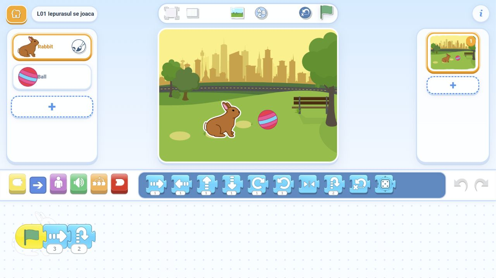

1. Construim întâlnirea
Câte un program pentru fiecare personaj. Alegem direcțiile, potrivim distanțele și adăugăm o săritură.
Iepurele și mingea se apropie, sar și primesc un final inventat de copii. Folosim numai Rabbit, Ball și Park din biblioteca aplicației.
Instalăm ScratchJr o dată. La clasă construim proiectele împreună, fără fișiere copiate pe tabletele copiilor.

Câte un program pentru fiecare personaj. Alegem direcțiile, potrivim distanțele și adăugăm o săritură.
După întâlnire și săritură, fiecare revine la start: o singură săgeată nouă per personaj. Mai greu: aceeași întoarcere din două săgeți cu numere diferite.
Două sărituri? Un mic dans? Fiecare copil adaugă o acțiune și o explică unui coleg.